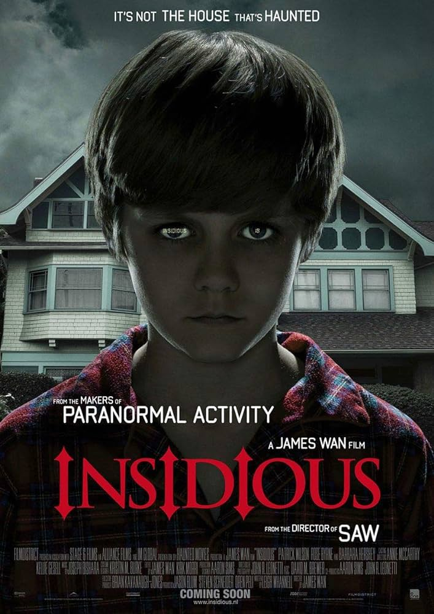

L'histoire horrible, mais vraie, d'Ed et Lorraine Warren,
enquêteurs paranormaux réputés dans le monde entier,
venus en aide à une famille terrorisée par une présence inquiétante dans leur ferme isolée.
Contraints d'affronter une créature démoniaque d'une force redoutable, les Warren se retrouvent
face à l'affaire la plus terrifiante de leur carrière.
Chris McNeill, actrice de télévision, s'inquiète d'entendre de plus en plus fréquemment
des bruits bizarres dans la chambre de sa fillette, Regan. Celle-ci se plaint d'avoir
des difficultés à dormir à cause des mouvements spasmodiques qui ébranlent son lit.
D'abord incrédule, Chris vérifie bientôt les dires de sa fille. Celle-ci se transforme peu
à peu en un véritable monstre.

Josh, son épouse et leurs trois enfants vivent depuis peu dans leur nouvelle maison lorsque
leur fils aîné tombe dans un coma inexpliqué. Pensant que leur maison est hantée, ils
réalisent que tout est lié à leur fils quand un médium leur révèle que l'âme de ce dernier se
trouve dans la dimension astrale, et que des forces maléfiques veulent s'emparer de son enveloppe corporelle.
Ils vont alors tenter de combattre le mal qui rôde autour d'eux.
Lorsqu'une jeune nonne se suicide dans une abbaye roumaine, la stupéfaction est totale dans
l'Église catholique. Le Vatican missionne aussitôt un prêtre au passé trouble et une novice
pour mener l'enquête. Risquant leur vie, les deux ecclésiastiques doivent affronter une force maléfique
qui bouscule leur foi et menace de détruire leur âme. Bientôt, l'abbaye est en proie à une lutte sans merci
entre les vivants et les damnés.
Deux hommes se réveillent enchaînés au mur d'une salle de bains. Ils ignorent où ils sont et
ne se connaissent pas. Ils savent juste que l'un doit absolument tuer l'autre, sinon dans moins
de huit heures, ils seront exécutés tous les deux. Voici l'une des situations imaginées par un machiavélique
maître criminel qui impose à ses victimes des choix auxquels personne ne souhaite jamais être confronté un jour.
Un détective est chargé de l'enquête.
Josh, son épouse et leurs trois enfants vivent depuis peu dans leur nouvelle maison lorsque
leur fils aîné tombe dans un coma inexpliqué. Pensant que leur maison est hantée, ils
réalisent que tout est lié à leur fils quand un médium leur révèle que l'âme de ce dernier se
trouve dans la dimension astrale, et que des forces maléfiques veulent s'emparer de son enveloppe corporelle.
Ils vont alors tenter de combattre le mal qui rôde autour d'eux.